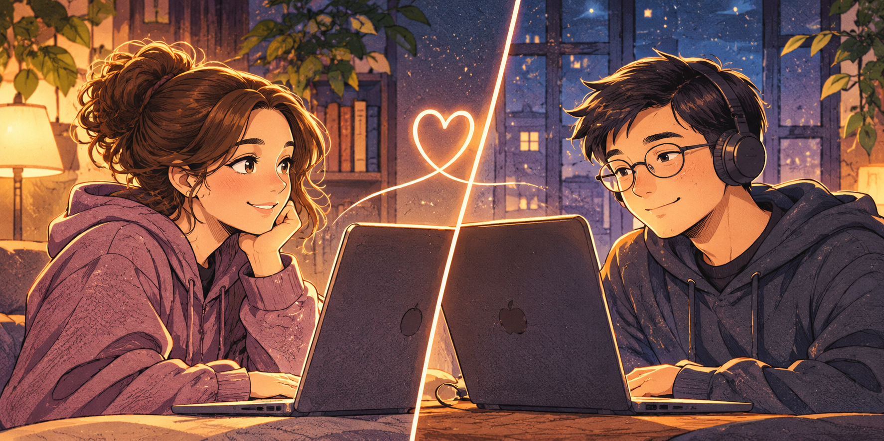
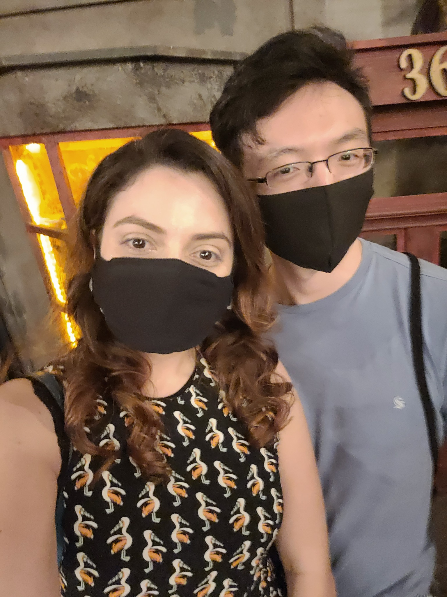
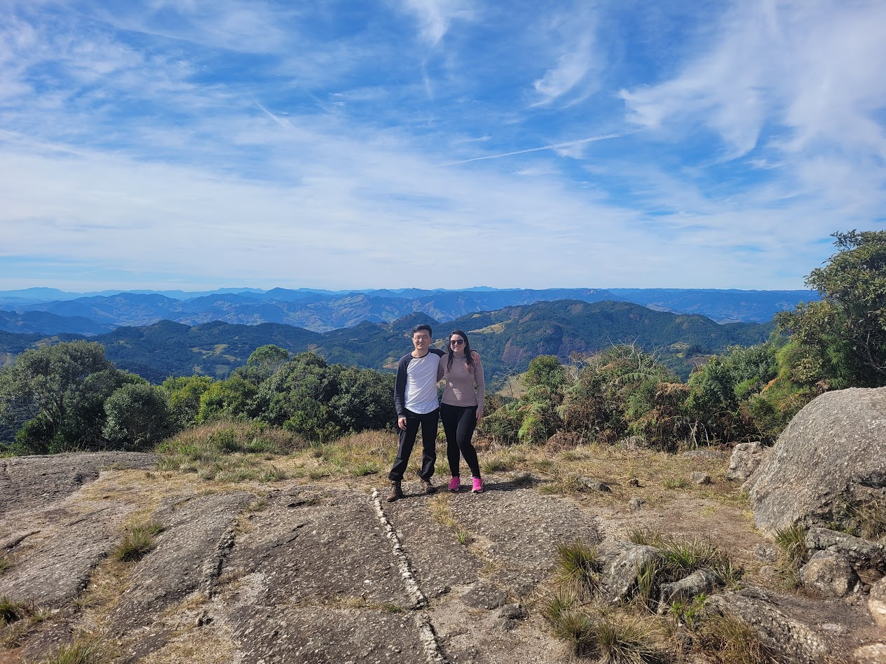
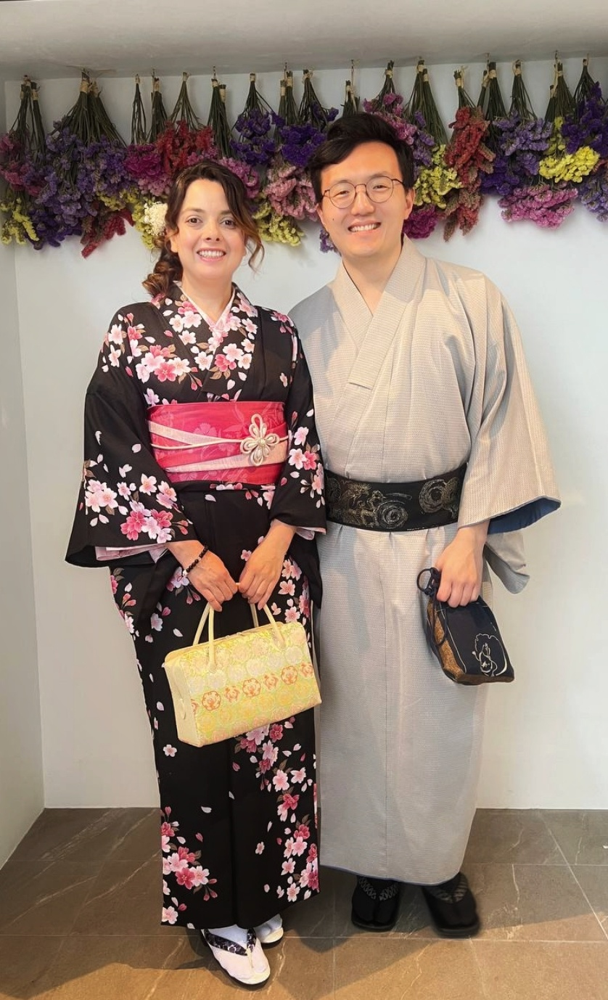
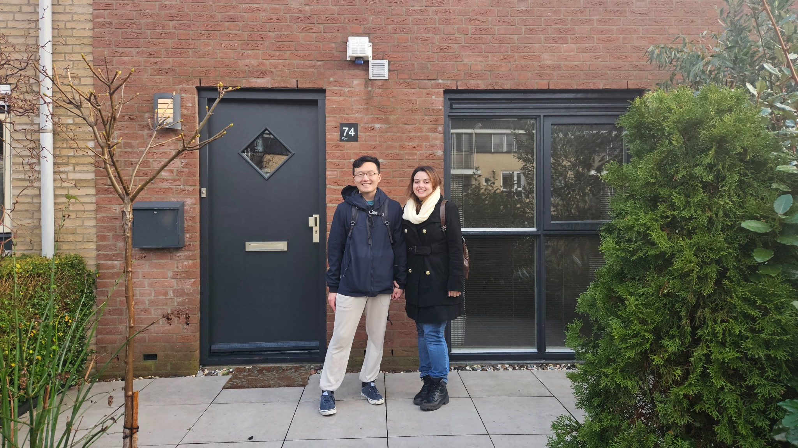
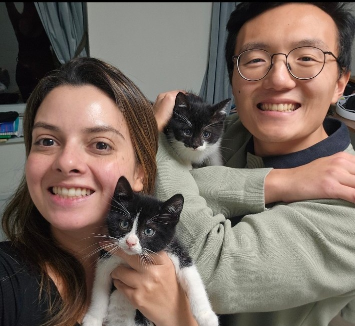
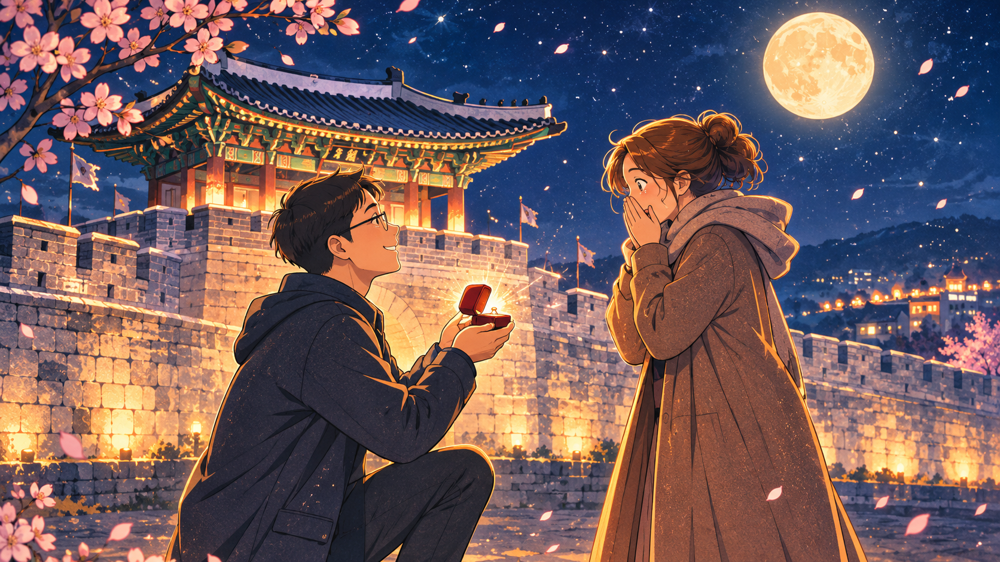
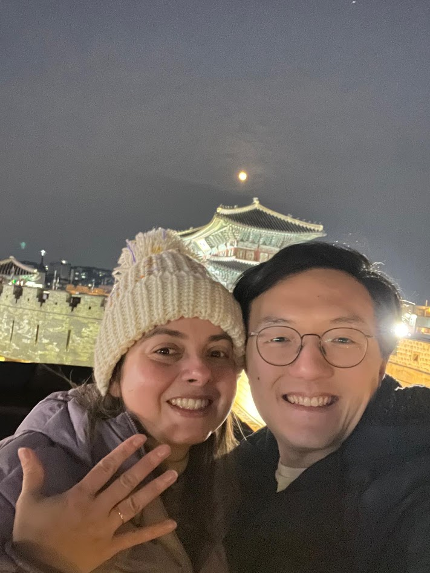

01
FIM DE 2020
Dois mundos distantes
Em meio a uma pandemia que colocou o mundo em pausa, duas pessoas encontraram alguém que fez seus corações acelerarem. Uma conexão à distância logo gerou a vontade de se conhecerem em pessoa.

 Cris & Vini
Cris & Vini
CRIS & VINI
Uma jornada que começou no meio de um mundo em pausa e se transformou na nossa maior aventura.
FIM DE 2020
Em meio a uma pandemia que colocou o mundo em pausa, duas pessoas encontraram alguém que fez seus corações acelerarem. Uma conexão à distância logo gerou a vontade de se conhecerem em pessoa.

22 DE MAIO DE 2021
Vindo de Goiânia, uma cidade a quase 1.000 km de distância, Cris viajou até São Paulo para transformar as conversas em um encontro de verdade. O destino foi a Ludus Luderia, um café de jogos de tabuleiro. À medida que eles se conheciam melhor, um amor puro e sincero florescia. As máscaras ainda faziam parte daquele cotidiano, mas o interesse foi se transformando em um relacionamento firme, onde cada um trazia o melhor do outro.

NOVOS CAMINHOS
Desde o começo, compartilhamos a vontade de explorar o mundo juntos. Gonçalves foi nossa primeira grande viagem a dois ainda no Brasil: montanhas, natureza e a alegria de descobrir novos lugares lado a lado. Mais tarde, o Japão se tornou uma das experiências mais especiais da nossa história — uma viagem que guardaremos para sempre.


JANEIRO DE 2023
Morar fora sempre foi um sonho de Cris. Para Vini, que já havia vivido em diferentes países, essa realidade era mais familiar. Em janeiro de 2023, decidiram construir essa vida juntos: Cris chegou primeiro, um mês antes de Vini, e logo os dois começaram a chamar a Holanda de casa.

JANEIRO DE 2025
Em novembro de 2024, Kai e Yuki nasceram. Encontrados na rua ainda pequeninos, os irmãos chegaram juntos à nossa família em janeiro de 2025. Desde então, nossa casa ganhou mais ronrons, personalidade, travessuras e muito amor.

1º DE FEVEREIRO DE 2026 · SUWON, COREIA DO SUL
Na Suwon Hwaseong Fortress, sob a luz da lua cheia, Vini fez a pergunta que mudaria tudo: se Cris queria estar com ele pelo resto da vida. Ela foi completamente pega de surpresa — tanto que, por um instante, nem percebeu que era um pedido de casamento. A resposta, porém, era óbvia: sim. Um sim para o caminho que já vinham construindo, e para tudo o que ainda estava por vir.
sim! ♡

E não é o fim da nossa história.
São apenas as primeiras páginas de uma aventura que ainda temos uma vida inteira para escrever. E agora, queremos muito que vocês façam parte dela.
24 · 04 · 2027